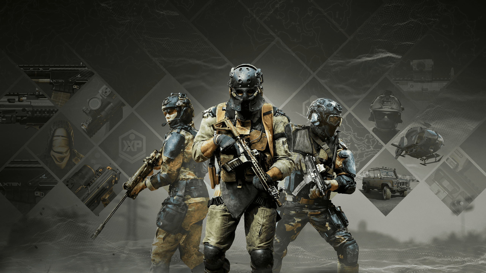
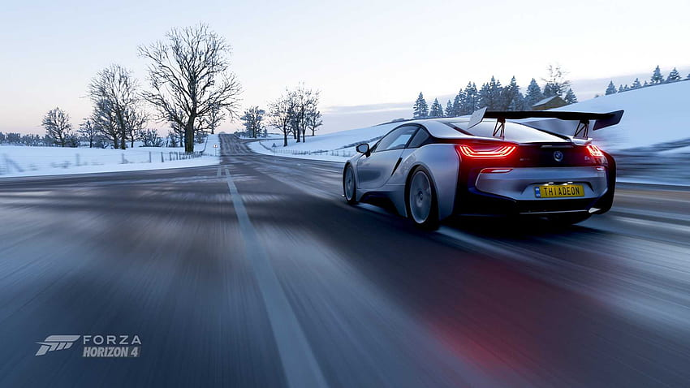
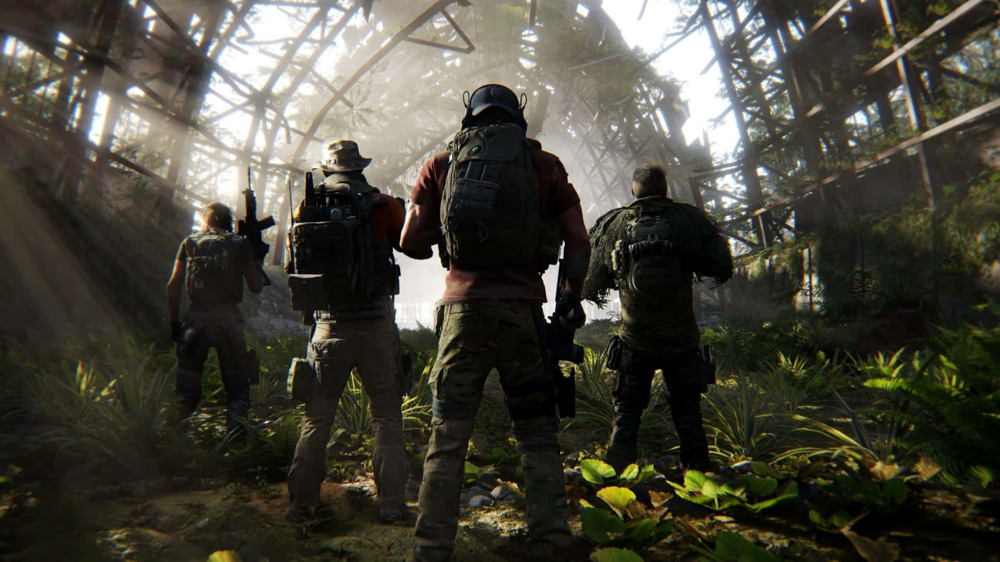
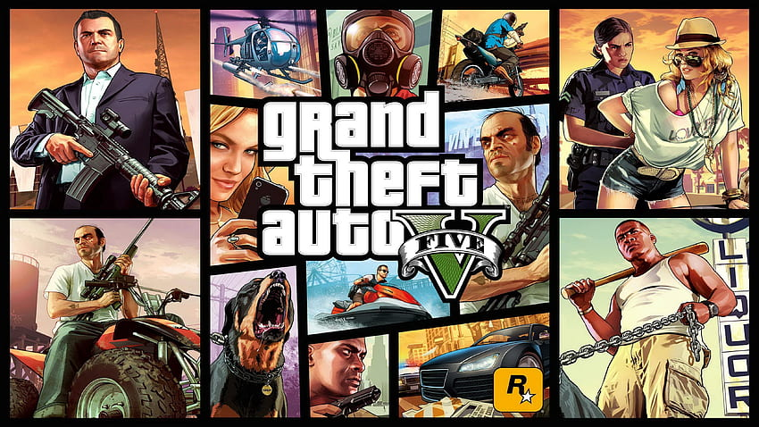

Warzone
Warzone is a free-to-play battle royale game developed by Infinity Ward and Raven Software and published by Activision. The game is set in the fictional city of Verdansk, which is loosely based on the real-life city of Krovnik in Russia. The game features both solo and team-based modes, with up to 150 players fighting to be the last person or team standing.

Forza 5
Forza Motorsport 5 is a racing game developed by Turn 10 Studios and published by Microsoft Studios for the Xbox One. The game features more than 200 cars from over 50 manufacturers and 17 tracks, with realistic physics and graphics. The game also includes an innovative AI system called Drivatar, which creates a virtual version of each player's driving style and allows them to compete against other players even when they're offline.

Ghost Recon BreakPoint
Tom Clancy's Ghost Recon Breakpoint is a tactical shooter game developed by Ubisoft Paris and published by Ubisoft. The game is set in an open world environment called Auroa, a fictional island in the Pacific Ocean. The player takes on the role of Lieutenant Colonel Anthony "Nomad" Perryman, a member of the US Army Special Forces who is sent to investigate a disturbance on the island. The game features both single-player and multiplayer modes.

GTA V
Grand Theft Auto V is an action-adventure game developed by Rockstar North and published by Rockstar Games. The game is set in the fictional state of San Andreas, which is based on Southern California. The player takes on the roles of three protagonists: Michael De Santa, Franklin Clinton, and Trevor Philips, who are all criminals and are involved in various criminal activities. The game features both single-player and multiplayer modes, and has been praised for its open-world environment, graphics, and gameplay.